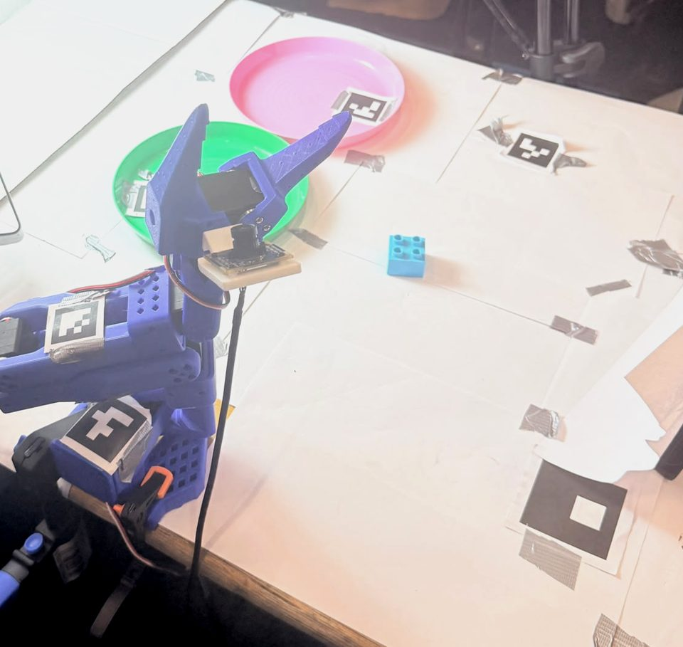

CPU
—All cores
A robot arm that checks every part, sorts it, and asks a person when it isn’t sure. The AI runs on an Intel laptop next to the robot.

Inspect a part to see the decision.
The circle marks where the defect is.
No measured cycles yet.
Log scale, so milliseconds stay visible next to seconds.
Inspect, sort, send to a plate, or stop.
Waiting for the dashboard server.
All cores
Used / total
Platform counters
Platform counters
| Process | PID | CPU | Memory |
|---|---|---|---|
| Shown on Linux. | |||